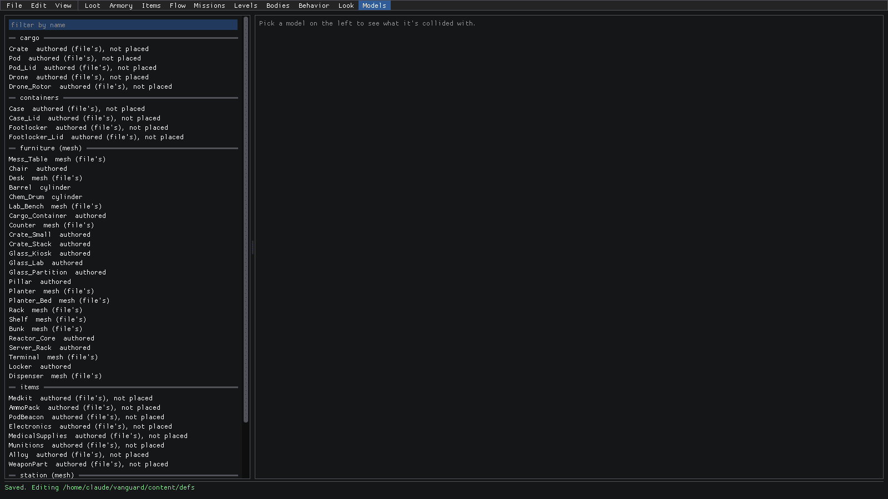
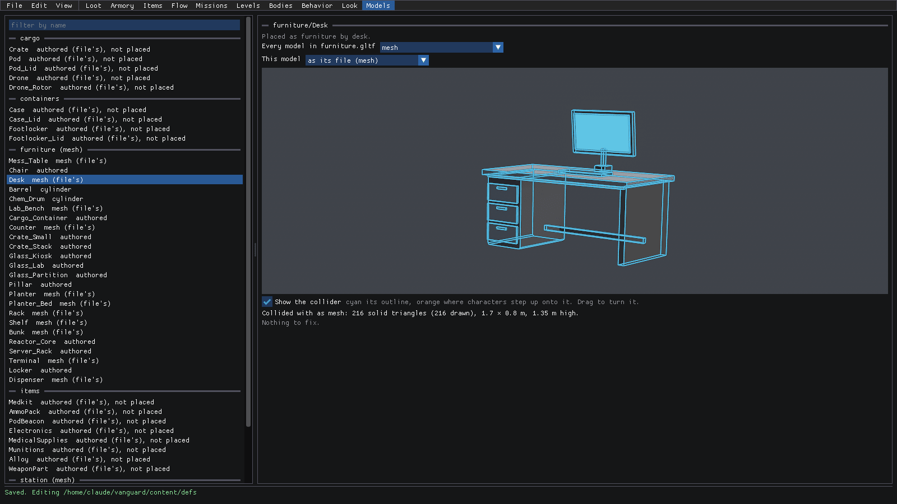
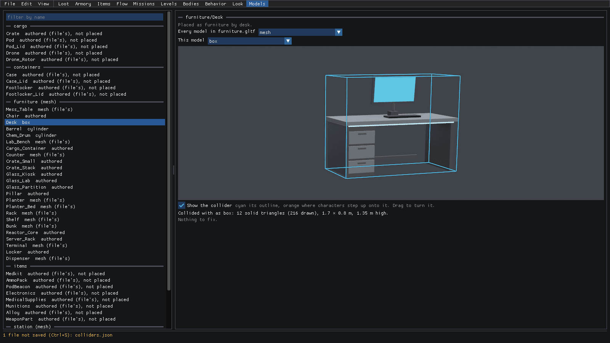
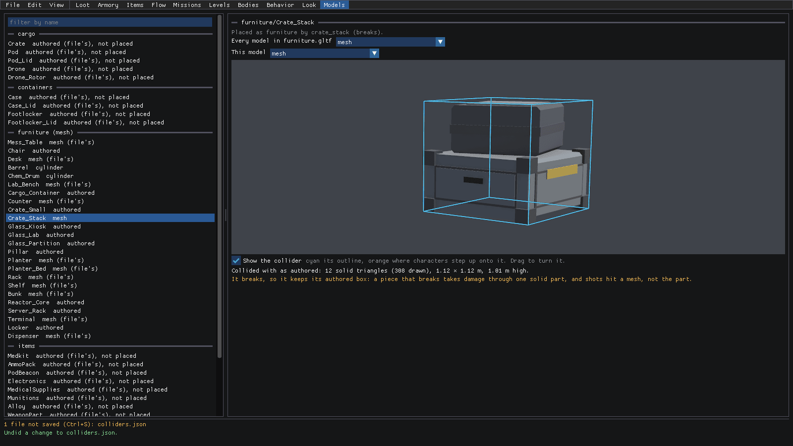
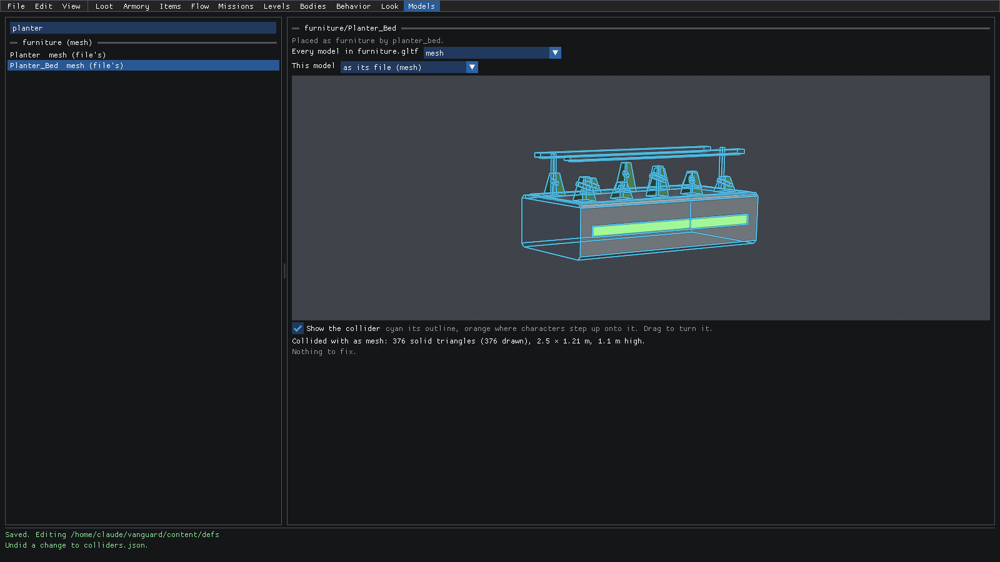
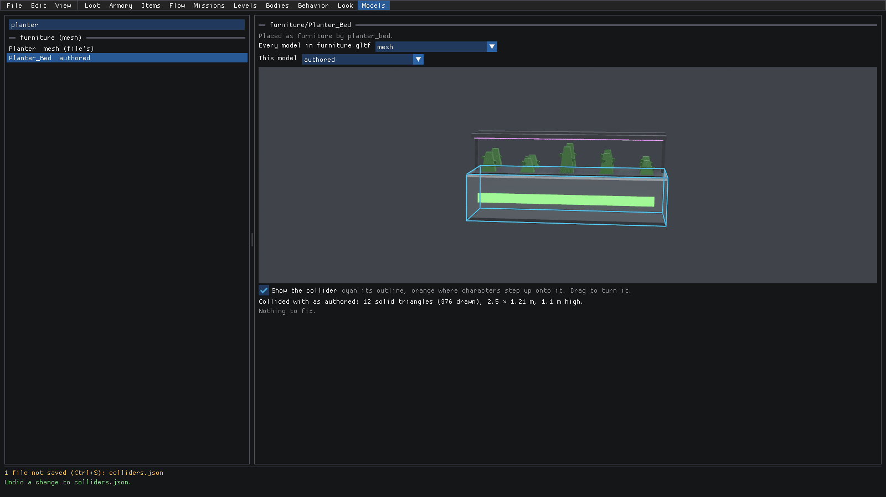

Studio: Models
When a player bumps into a desk, a soldier hides behind a crate or a round goes through a planter, what are they
actually hitting? Not the drawn model. They hit its collider, and every prop model gets one, set in
content/props/colliders.json. Characters, shots, sight, cover and the navigation grid all use the same one.
Models mode is where you pick it. You see the collider's outline over the model as it turns, built exactly the way the level generator sets it into a level, along with anything worth fixing. The plan behind it is in plans/model-colliders.md.
There are five kinds of collider:
- authored: the boxes in the model's file (
..._CollisionOnly). The default. - mesh: exactly what's drawn. Good for irregular furniture, like a desk's hutch or a terminal's screen.
- box and cylinder: one box, or one upright cylinder, around what's drawn. A cylinder suits barrels and drums.
- none: nothing at all; walked and shot through.
How to open it
Click Models on the mode bar at the top, or start Studio straight in it:
dotnet run --project src/LastFleet.Studio -- --mode models
Want to land right on one model? --select furniture/Desk opens on the desk.

Here's the tour:
- The list on the left has every prop model, grouped by file (
cargo,containers,furniture (mesh),items...). The file's default collider is in brackets after its name. Each model shows its collider, with(file's)when it's using the file's default, andnot placedwhen nothing sets it into a level (it isn't furniture or a station fixture). There's a filter by name box at the top. - The stage on the right shows the picked model, once you pick one.
Pick a model's collider
So the desk is a pain to walk around? Let's see what it's collided with.
- Click Desk under furniture (mesh). The top of the stage tells you how it's placed (
Placed as furniture by desk.), then two boxes: Every model in furniture.gltf (the file's default,mesh) and This model (as its file (mesh)). The cyan outline is the collider: every leg, drawer and the monitor, exactly as drawn. Under the stage is what it's made of (216 solid triangles (216 drawn), 1.7 × 0.8 m, 1.35 m high.) andNothing to fix.

- Open This model and pick box. The outline becomes one box around the whole desk, the solid triangles drop
from 216 to 12, and the list says
Desk box. The status bar says1 file not saved (Ctrl+S): colliders.json.

Every change reaches the furniture Studio builds levels from right away, saved or not. Ctrl+S writes
colliders.json, and Ctrl+Z puts it back (the status bar says Undid a change to colliders.json). Too easy!
See what Studio flags
Not every collider works for every model, and Studio tells you when one won't do. Breakable props are a good example.
- Click Crate_Stack. It's
Placed as furniture by crate_stack (breaks).and it's collided with its authored box. - Open This model and pick mesh. Studio flags it in orange under the stage:
It breaks, so it keeps its authored box: a piece that breaks takes damage through one solid part, and shots hit a mesh, not the part.The outline stays the authored box, because that's what the game would really use.

Ctrl+Z that one. Studio flags a few other things in the same spot: why a collider won't do (an authored model whose
solid isn't a box), surfaces characters step up onto (drawn in orange on the outline), and a mesh that isn't closed
(shots and sight only hit a face from the front, so they slip through a hole). When there's nothing, it says Nothing to fix.
Find a model and compare its colliders
The list is long, so use the filter.
- Click filter by name and type
planter. The list narrows to Planter and Planter_Bed. - Click Planter_Bed. It's on its file's mesh, so every plant and both lamps are solid.

- Open This model and pick authored to compare. Now only the bed itself is solid, and the plants and lamps above it aren't collided with at all.

Which one's right? That's a design call: whether a soldier should see over the plants, and whether rounds should pass through them. Pick it, then Ctrl+S to keep it or Ctrl+Z to go back.
Where to next
- The reference is Models: what each model is collided with.
- How prop models are made and exported (including the
_CollisionOnlyboxes) is in props.md. - For the materials those models are drawn with, see look.md.